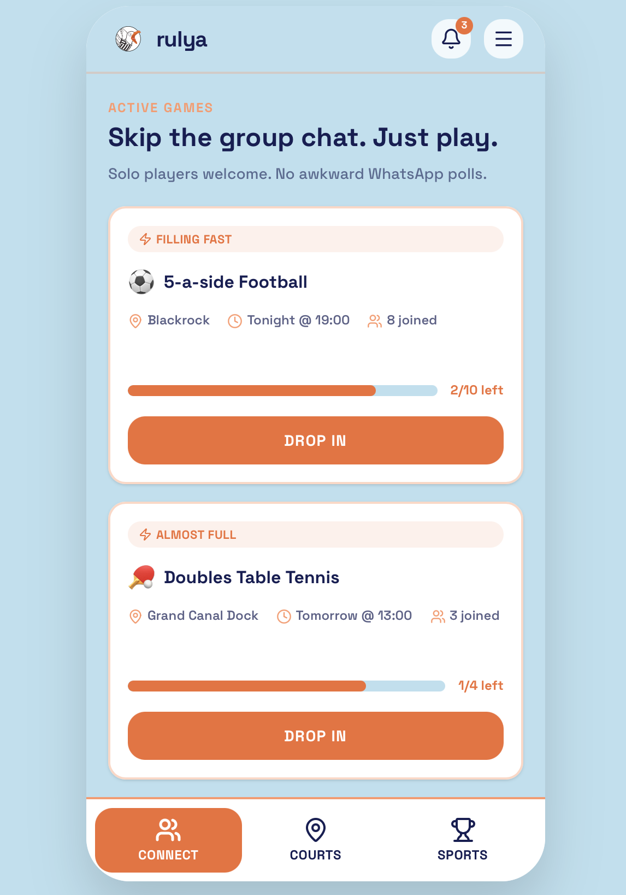

There aren't enough third spaces for young people that don't revolve around the pub. Courts, GAA grounds, and local sports venues sit half empty every week, not because demand isn't there, but because booking them is a friction nightmare and most casual players don't have a crew to fill one.
Facebook groups create plans that fall apart. No-shows kill momentum. The infrastructure for casual sport simply doesn't exist.
With younger people drinking less on average, the demand for social alternatives is only growing. The market gap wasn't just a sports problem, it was a community problem with a booking problem layered on top.
Rulya is a hyper-local platform that makes casual sport easier to join, book, and pay for. “No team? No bother.” The platform connects players, unlocks underused venues — including school halls and GAA clubs — and handles payments, eliminating the no-show problem that makes Facebook groups unreliable.

Competitive landscape
Led the website build, set up and managed GA4 analytics tracking, and co-presented the full market entry and growth strategy to an academic panel. Responsible for the digital infrastructure that underpinned the pre-launch campaign.